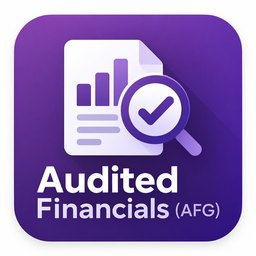
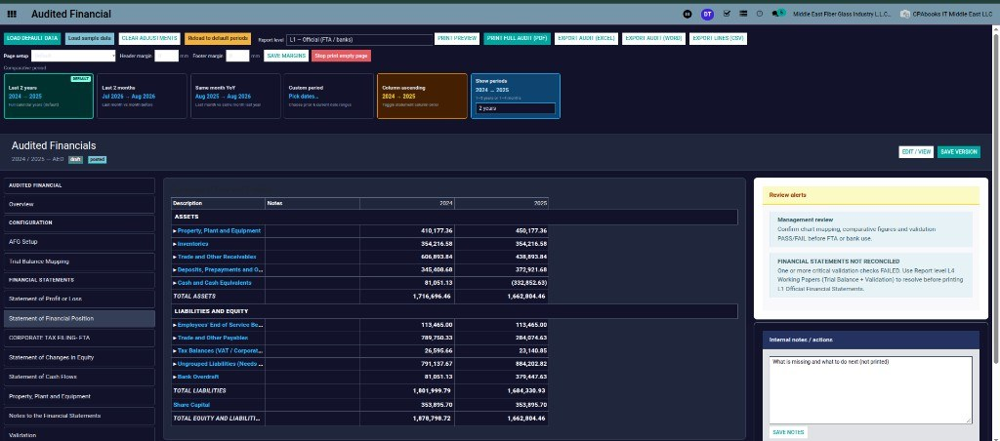

7 statement sections |
5 report levels |
25+ validation checks |
4 export formats |

Your year-end financial statement pack, straight from your Odoo ledgers.
Profit or Loss, Financial Position, Changes in Equity, Cash Flows, PPE schedule, notes and a UAE Corporate Tax layout, built from posted journals, checked with PASS / FAIL validation, and printed in the level of detail you need.
See the pack Request a demo| Assets | 2024 | 2025 |
| Property, plant and equipment | 410,177 | 450,177 |
| Inventories | 354,217 | 354,217 |
| Trade and other receivables | 606,894 | 438,894 |
| Cash and cash equivalents | 81,051 | (332,853) |
| Total assets | 1,716,696 | 1,662,804 |
7 statement sections |
5 report levels |
25+ validation checks |
4 export formats |
AFG lays out the full set of management financial statements from the accounts you already keep in Odoo. No trial balance copied into Excel, no figures retyped into Word.
| I | Statement of Profit or Loss | P&L |
| II | Statement of Financial Position | SOFP |
| III | Statement of Changes in Equity | SOCE |
| IV | Statement of Cash Flows | CF |
| V | Property, Plant and Equipment | PPE |
| VI | Notes to the Financial Statements | Notes |
| VII | Validation & Review | Checks |
| + | Corporate Tax Filing (FTA) layout | CT |
Every line shows prior year, current year and the trial balance figure next to it, so differences stand out at a glance.

Give the bank a clean official pack, give management the type breakdown, and keep the full working papers for the accountant. Switch the level, print again.
Show 1 to 5 years or 1 to 4 months, and choose the column order.

More than 25 checks run on the pack. A critical FAIL stops the L1 official print and shows you where to fix it.
| Revenue − Expenses = Profit | PASS |
| Assets = Equity + Liabilities | PASS |
| Changes in Equity agree to SOFP and P&L | PASS |
| Closing cash agrees to Cash Flow | PASS |
| Opening balance = prior closing | PASS |
| Cash not overdrawn | WARN |
| Financial statements reconcile to TB | FAIL |

Tag each account with one of 30 CT filing categories. AFG builds the Corporate Tax view of P&L and Financial Position and prints a CT-only PDF.
| Publisher | Saaskul |
| Version | Odoo 14 |
| Price | Free |
| Needs | Accounting, Saaskul dashboard module |
| Exports | PDF, Excel, Word (.doc), CSV |
| Statements | P&L, SOFP, SOCE, Cash Flows, PPE, Notes, CT layout |
Questions, setup help or a demo? Write to us and we will get back to you.
info.cpabooks@gmail.com +971 56 256 8128